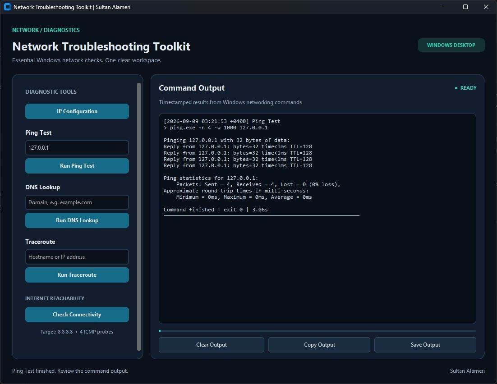
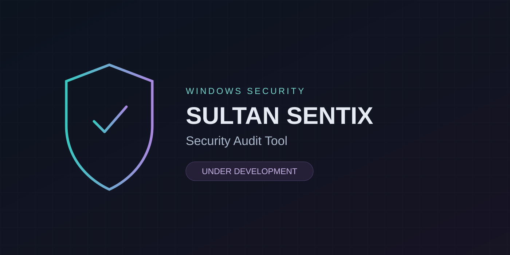

Password Strength Analyzer
A Python based cybersecurity project that evaluates password strength and provides improvement suggestions.
Hello, I’m
IT and Cybersecurity student with hands on experience in technical support, hardware and software troubleshooting, networking, and virtualization. Building practical skills through a personal homelab using MikroTik, UniFi, Proxmox, Windows, and Linux. Interested in IT support, networking, cybersecurity, and data center operations, with strong troubleshooting and problem solving skills
B.S in CyberSecurity ( Purdue University 🇺🇸 ) | GPA: 3.92
Applied Tehcnology High School (Abu Dhabi)
Information Technology Trainee
Abu Dhabi Municipality
Feb 2021 – May 2021
A Python based cybersecurity project that evaluates password strength and provides improvement suggestions.

A Python-based desktop toolkit that simplifies common network troubleshooting tasks such as IP configuration, ping tests, DNS lookup, traceroute, and connectivity checks.

A Windows security auditing tool designed to inspect system configuration, installed applications, services, and basic security settings, then generate a structured security report.
Under Development